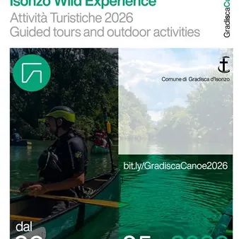

da sab 9 mag a sab 24 ott
Itinerario turistico: Isonzo wild experience
Da maggio a ottobre arriva Isonzo Wild Experience, la proposta di turismo fluviale a cura di @Selvatico Tours: una discesa in canoa da Gorizia a Gradisca d’Isonzo, accompagnati da istruttori autorizzati e guide naturalistiche. Date: 9, 16 maggio - 12 settembre, 3, 24 ottobre…
 Indicazioni
Indicazioni
- Costi e prenotazioni
- Costo non indicato · Prenotazione non indicata
- Programma
- Programma da verificare. Apri la fonte ufficiale per orari e possibili aggiornamenti.
- In caso di maltempo
- Nessuna indicazione specifica pubblicata.
- Note
- Acquisito automaticamente dalla fonte.
L’EVENTO
Descrizione completa
ISONZO WILD EXPERIENCE: IN CANOA DA GORIZIA A GRADISCA LUNGO L’ISONZO
Un’esperienza per vivere il fiume da vicino: attraversarlo, ascoltarlo, seguirne il ritmo.
Da maggio a ottobre arriva Isonzo Wild Experience, la proposta di turismo fluviale a cura di @Selvatico Tours: una discesa in canoa da Gorizia a Gradisca d’Isonzo, accompagnati da istruttori autorizzati e guide naturalistiche. Partecipanti: Massimo 20 persone Percorso o programma: Shuttle fino a Gorizia, discesa di 2 ore e 30 minuti e arrivo sotto la Passerella di Gradisca Discesa in canoa con istruttori autorizzati e piccolo aperitivo a conclusione della visita naturalistica
Date sabato 9 maggio Turno A: ore 9.00 e Turno B: ore 15.00 sabato 16 maggio Turno A: ore 9.00 e Turno B: ore 15.00 sabato 12 settembre Turno A: ore 9.00 e Turno B: ore 15.00 sabato 3 ottobre Turno A: ore 9.00 e Turno B: ore 15.00 sabato 24 ottobre Turno A: ore 9.00 e Turno B: ore 15.00
Prenotazioni: http://bit.ly/GradiscaCanoe2026 Costo 50 € adulti 20 € ragazzi/e dagli 8 ai 14 anni
Ritrovo: Palazzetto Via San Michele 8, Gradisca d’Isonzo
Il servizio comprende: - Noleggio canoe canadesi. - Lezione introduttiva. - Accompagnamento da parte di guide naturalistiche. - Sacca stagna per oggetti di valore e dispositivi elettronici. - Giubbotto di aiuto al galleggiamento. Shuttle dal punto di ritrovo al punto di imbarco. Assicurazione. - Non incluso: Qualsiasi servizio non espressamente indicato.
Requisiti: Buona acquaticità e capacità di nuoto di base. Abbigliamento sportivo. Scarpe da ginnastica o sandali chiusi (no infradito).
Informazioni importanti: Attività a partire dagli 8 anni. È possibile bagnarsi durante l’escursione. Si consiglia di portare un cambio di vestiario da lasciare in auto.
IL PROGRAMMA
Programma e orari
Appuntamenti raccolti dalle fonti elencate. Dove manca un orario, non è ancora disponibile in questa scheda.
Programma pubblicato
- Dal 2026-05-09 al 2026-10-24
INFORMAZIONI UTILI
Prima di partire
- Controllare la fonte prima di partire.
ORGANIZZAZIONE